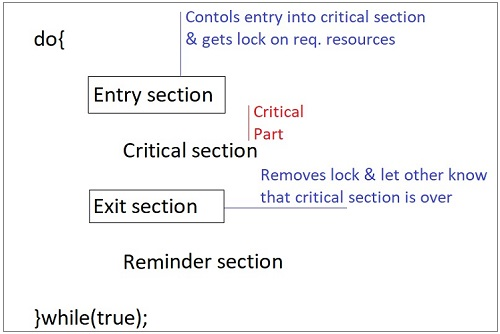

A Critical Section is a code segment that accesses shared variables and has to be executed as an atomic action. It means that in a group of cooperating processes, at a given point of time, only one process must be executing its critical section. If any other process also wants to execute its critical section, it must wait until the first one finishes.
Solution to Critical Section Problem A solution to the critical section problem must satisfy the following three conditions :